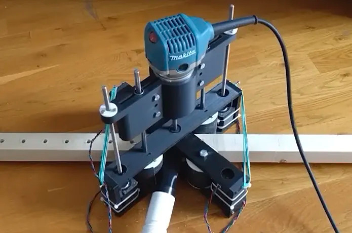

automated drilling machines revision 2014


Challenges
Frames can be manufactured by hand, with careful measurement and drilling. While meditative, this work is repetitive and laborious. Automating the process in an affordable manner will reduce cost, increase availability, and free time for creative effort.
Approaches
The frame drill automatically drills regularly spaced holes in square raw material to produce reusable Replimat frames. It is constructed of a number of custom plates, motors, a controller, and several 3D printed parts.
Bill of Materials
{| class="wikitable"
|-
! Part !! Quantity !! Supplier
|-
| plate-drill-machine || 2 || CAD File
|-
| plate-drill-machine-spindle || 1 || CAD File
|-
| NEMA-17 stepper motor || 3 || Link
|-
| roller-raw-material || 12 || CAD File
|-
| Spindle || 1 || [[https://www.ebay.com/itm/ER16-500W-High-Speed-DC-48V-Air-Cooling-Brushless-Spindle-Motor-Driver-Clamp/312656264518?hash=item48cbc3fd46:g:YDkAAOSwQjxdCuK~|ebay]]
|-
| LM8UU Bearing || 1 - pack of 2 || [[https://www.amazon.com/gp/product/B07RL72L65/ref=ppx_yo_dt_b_asin_title_o00_s00?ie=UTF8&psc=1|Amazon]]
|-
| Acme threaded rod, coupler, nut, pillow block bearings || ||
|-
| Roller || ||
|-
| Drive belt || ||
|-
| Drive pulley || ||
|-
| Controller || ||
|-
| Neoprene foam w/ adhesive backing || || [[https://www.amazon.com/gp/product/B06ZZDJ19L/ref=ppx_yo_dt_b_asin_title_o02_s01?ie=UTF8&psc=1|Amazon]]
|-
| Drill bit || ||
|-
| Rail Guide Support for 16mm Diameter Shaft || 1 - pack of 4 || [[https://www.amazon.com/gp/product/B07QNY3831/ref=ppx_yo_dt_b_asin_title_o01_s00?ie=UTF8&psc=1|Amazon]]
|-
| Rail Guide Support for 8mm Diameter Shaft || 1 - pack of 4 || [[https://www.amazon.com/gp/product/B07QS7LLF6/ref=ppx_yo_dt_b_asin_title_o02_s00?ie=UTF8&psc=1|Amazon]]
|-
| 350mm 8mm T8 Lead Screw Set Lead Screw+ Copper Nut + Coupler + Pillow Bearing Block || 2 || [[https://www.amazon.com/gp/product/B01H1S13SQ/ref=ppx_yo_dt_b_asin_title_o02_s01?ie=UTF8&psc=1|Amazon]]
|-
| Oilite drill bushing || 2 || [[https://www.mcmaster.com/6338K463|Mcmaster]]
|}
To do
- upload CAD
- rev with Marc
- quote with Andy